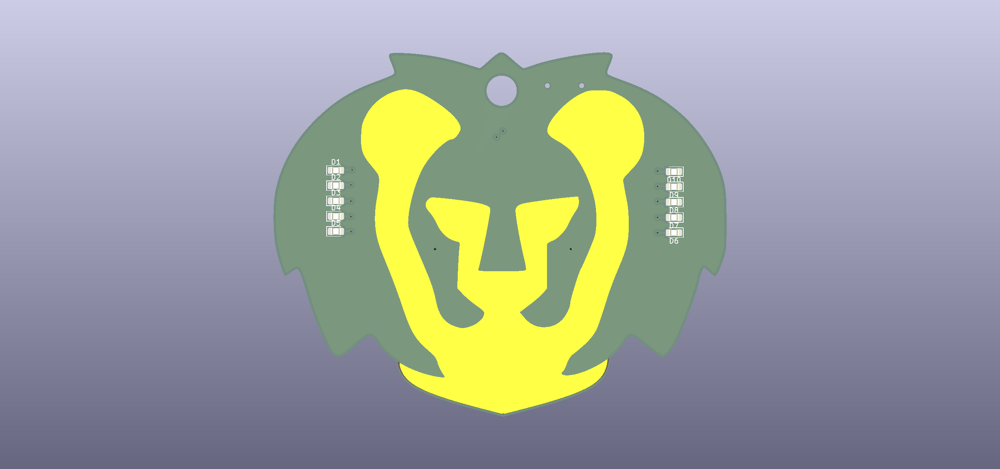
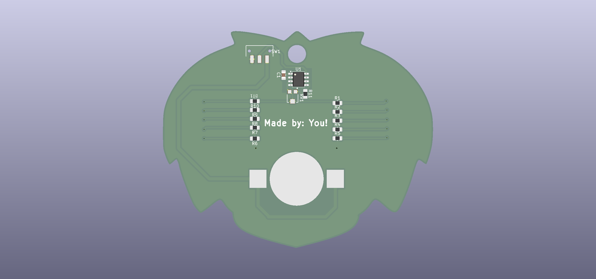
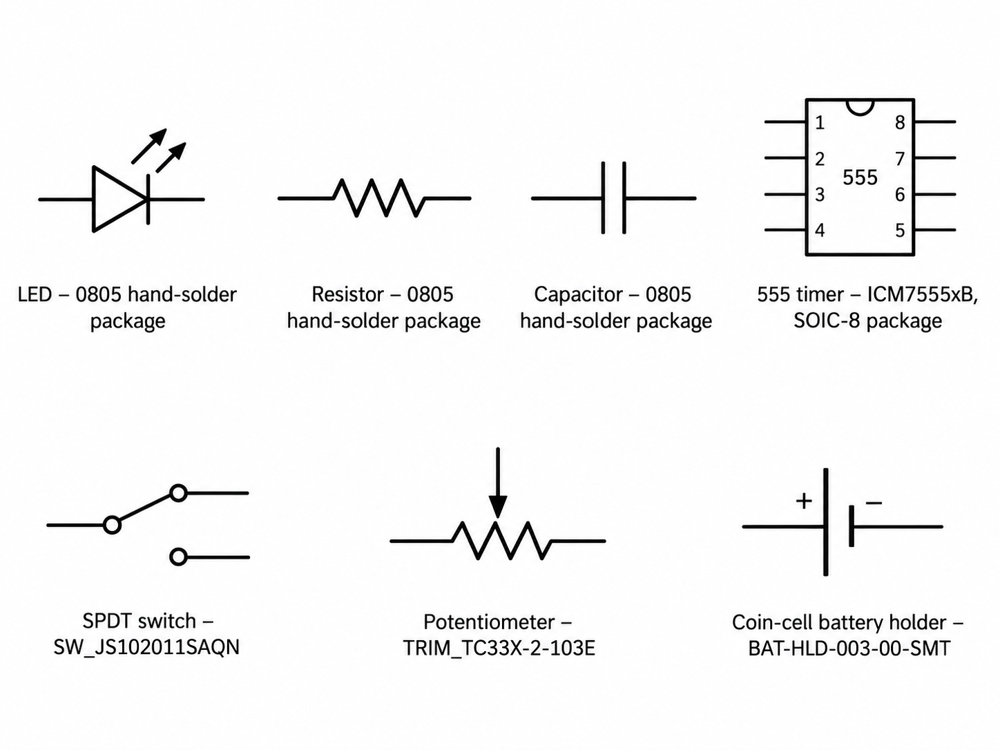
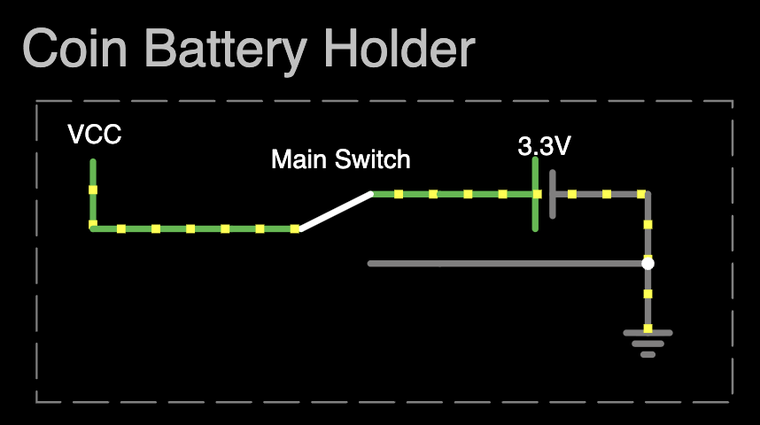
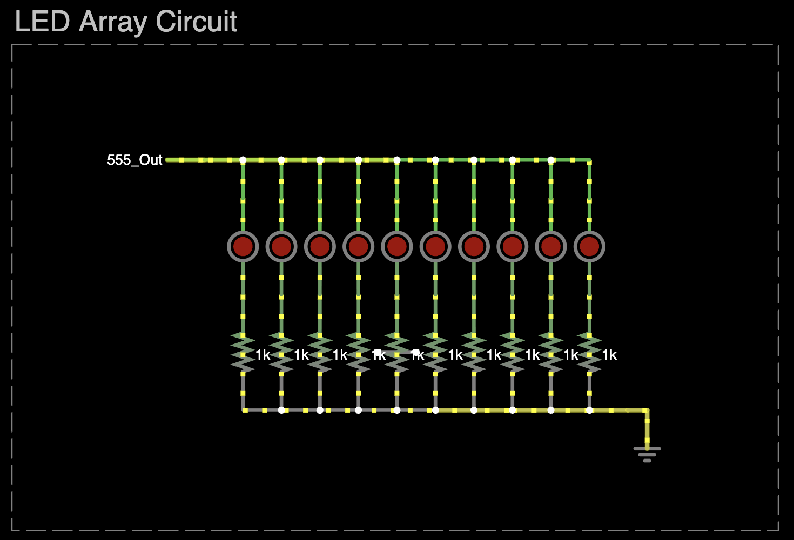

Getting Familiar with the Circuit
Explore the circuit you'll build in this workshop and see how its components work together.
The Goal


By the end of this workshop, you should be coming out of it with something like shown above. A PCB Design of your own making with all the necessary components on it to make a simple static / flashing light keychain. Files for the board outline and exposed copper layer will be provided for you to follow along with, however if you decide to make your own board outline we're more than happy to accept that as well!
Simulating Our Keychain
Open the circuit in Falstad in a new tab
The circuit we'll be making today is a 555 timer circuit that flashes a group of LEDs connected in parallel as shown in the simulation above.
A List of Parts Electrical Components in Use
Our design uses seven different electrical components:
- Light-emitting diodes (LEDs): Emit light when current passes through them.
- Resistors: Resist the flow of electrical current.
- Capacitors: Store and release electrical energy in an electric field.
- 555 timer IC: An integrated circuit containing resistors, comparators, inverters, and transistors. In this circuit, it generates a continuous flashing signal.
- Variable resistor (potentiometer): A resistor whose resistance can be adjusted.
- Single-pole double-throw (SPDT) switch: Routes one input to one of two output paths.
- CR2032 coin-cell battery holder: Holds a coin-cell battery, a type commonly used in car key fobs, computer motherboards, and low-power remotes.
The specific parts or equivalent packages used for these components are listed below. Datasheets are included where relevant for reference, but you do not need to open them during the workshop.
- LED: 0805 hand-solder package
- Resistor: 0805 hand-solder package
- Capacitor: 0805 hand-solder package
- 555 timer: ICM7555xB, SOIC-8 package
- SPDT switch: SW_JS102011SAQN
- Potentiometer: TRIM_TC33X-2-103E
- Coin-cell battery holder: BAT-HLD-003-00-SMT
Some Background Knowledge Common Electrical Symbols

Electrical symbols represent the components used when drawing a schematic. Above are the symbols we'll use in this workshop. Electrical engineers also use symbols to represent common circuit connections, such as power supply and ground connections. You'll see more of them when we start building the schematic.
Circuit Breakdown Parts of the Circuit
Explore the main sections of the circuit below. Each section has space for an image or diagram and optional further-reading links.
Battery Circuit

The coin cell supplies power to the circuit. The 3.3 V marking represents the voltage of a typical coin cell battery, and the main switch is a single-pole double-throw (SPDT) switch that selects between two paths.
Labels such as VCC and GND make it easier to show shared connections. In this simulation, VCC is a label for the positive supply rail; the coin cell provides the voltage. GND is connected to the negative side of the battery and acts as the circuit's 0 V reference.
- Add a resource title and link here
555 Timer Circuit

The 555 timer is configured as a square-wave oscillator. Its resistor and capacitor network controls the timing, while the potentiometer lets you adjust the output frequency. The output signal then drives the LED section of the circuit.
LED Array

The circuit above is an array of LEDs, each with its own 1 kΩ resistor, powered by the output of the 555 timer. The resistors limit the current through the LEDs. For a typical red LED with a forward voltage of about 2 V, the current through each LED is approximately:
With 10 LEDs, the total current is about 13 mA, within the current rating of the circuit:
Actual LED forward voltages vary, so use the datasheet for the specific LED when calculating resistor values.
Simulation note: Falstad uses idealised component models, so the simulation and hand calculations may not reflect every real-world variation. Real components can differ from their ideal values; account for those differences when designing a circuit.
Question Time
Why does each LED need its own resistor?
Could you put all the LEDs in parallel and connect them to one resistor with an equivalent resistance? How would that affect your circuit?
Hint: Think about the non-ideal characteristics of LEDs.
You don't need to answer this now. There will be a short quiz at the end of the workshop, regardless of whether you've finished your project. It's useful practice and is required to receive event PEP hours.